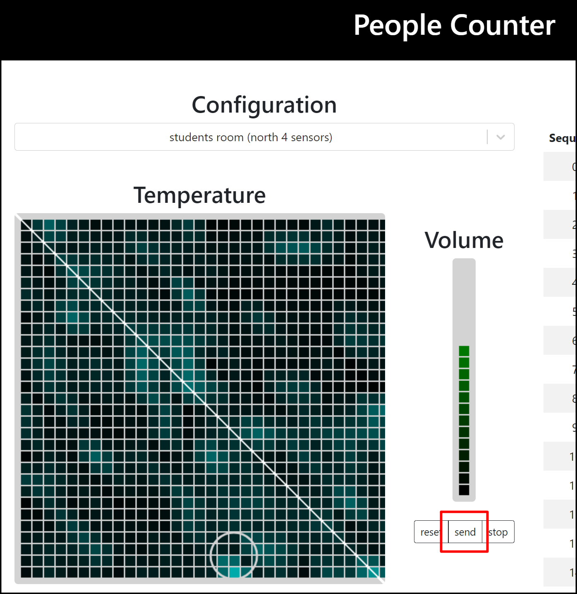

（付録）grideye_server（温度可視化モジュール）について
grideye_server（温度可視化モジュール）の備忘録を以下に示す。
温度可視化環境の定義
・定義ファイル名
./provider_people_counter/config/environment.json
・定義内容
[
{
"name": "conference room", // プルダウン表示名
"devices": [0, 1, 2, 3], // 表示するGrid-Eye番号（GE-xx）
"hostName": "raspitoi1", // Grid-Eyeを接続しているコンピュータ名（ラズパイ名）
"isWall": false, // Grid-Ey設置方法（true:壁設置 false:天井設置）
"rotate": [0, 0, 0, 0], // 回転表示設定（0:回転表示なし +1毎に90度回転）
// ※devicesの配列番号と対応しているため同数の配列が必要
//
"shape": [2, 2] // デバイスの表示レイアウト（ヨコ数×タテ数）
// ※devicesの配列数との整合性に注意する
//
// （例）Grid-Eye番号の表示の並び
// [2, 2]の場合 [4, 2]の場合
// 0 1 0 1 2 3
// 2 3 4 5 6 7
},
{
:
:
}
]
編集は、テキストエディタ等で行う。
内容変更後は、webpage serverを一度停止した後に、章「8.audio_serverのインストール」ー「ビルド」に従いリビルドする必要がある。
Synerex Proxy起動（例）
audio_server起動時にすでに実行している場合は不要。
$ ./proxy -nodesrv 192.168.207.165:9990 -channel 19 -verbose
grideye_serverの起動
新しいターミナルを開き以下実行する。
（カレントディレクトリ：provider_people_counter）
$ python grideye_server.py
webpage serverの起動
新しいターミナルを開き以下実行する。（温度可視化環境の定義変更で停止した場合など）
audio_server起動時など、すでに実行している場合は不要。
（カレントディレクトリ：provider_people_counter）
$ cd client/out
$ python -m http.server
可視化表示
ブラウザを立ち上げ、URLに「127.0.0.1:8000」を入力しする。
表示中のプルダウンから任意のエリアを選択し「send」キーを押下する。
